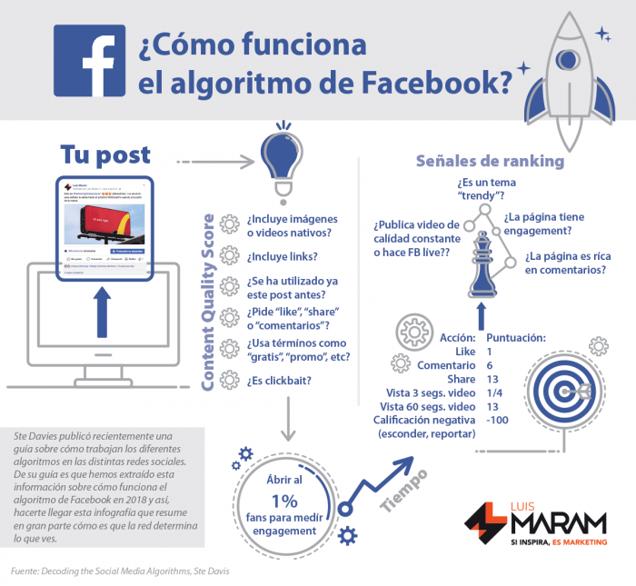

Elementos del concepto marketing
El marketing mix es uno de los elementos clásicos del marketing, es un término creado por McCarthy en 1960, el cual se utiliza para englobar a sus cuatro componentes básicos: producto, precio, distribución y comunicación
Estas cuatro variables también son conocidas como las 4Ps por su acepción anglosajona (product, price, place y promotion). Las 4Ps del marketing (el marketing mix de la empresa) pueden considerarse como las variables tradicionales con las que cuenta una organización para conseguir sus objetivos comerciales.
Para ello es totalmente necesario que las cuatro variables del marketing mix se combinen con total coherencia y trabajen conjuntamente para lograr complementarse entre sí.
-Producto
El producto es la variable por excelencia del marketing mix ya que engloba tanto a los bienes como a los servicios que comercializa una empresa. Es el medio por el cual se satisfacen las necesidades de los consumidores. Por tanto, el producto debe centrarse en resolver dichas necesidades y no en sus características, tal y como se hacia años atrás. Dentro del producto encontramos aspectos tan importantes a trabajar como la imagen, la marca, el packaging o los servicios posventa. El director de marketing también debe tomar decisiones acerca de la cartera de productos, de su estrategia de diferenciación de productos, del ciclo de vida o incluso de lanzamiento de nuevos productos.
-Precio
El precio es la variable del marketing mix por la cual entran los ingresos de una empresa. Antes de fijar los precios de nuestros productos debemos estudiar ciertos aspectos como el consumidor, mercado, costes, competencia, etc. En última instancia es el consumidor quien dictaminará si hemos fijado correctamente el precio, puesto que comparará el valor recibido del producto adquirido, frente al precio que ha desembolsado por él.
Establecer correctamente nuestra estrategia de precios no es tarea fácil, y tal y como se ha comentado anteriormente, todas las variables, incluido el precio tienen que trabajar conjuntamente y con total coherencia. La variable del precio nos ayuda a posicionar nuestro producto, es por ello que si comercializamos un producto de calidad, fijar un precio alto nos ayudará a reforzar su imagen.
Distribución
En términos generales la distribución consiste en un conjunto de tareas o actividades necesarias para trasladar comprar winstrol el producto acabado hasta los diferentes puntos de venta. La distribución juega un papel clave en la gestión comercial de cualquier compañía. Es necesario trabajar continuamente para lograr poner el producto en manos del consumidor en el tiempo y lugar adecuado.
No hay una única forma de distribuir los productos, sino que dependerá de las características del mercado, del mismo producto, de los consumidores, y de los recursos disponibles. Dentro del marketing mix, la estrategia de distribución trabaja aspectos como el almacenamiento, gestión de inventarios, transporte, localización de puntos de venta, procesos de pedidos, etc.
Comunicación
Gracias a la comunicación, las empresas pueden dar a conocer como sus productos, y pueden satisfacer las necesidades de su público objetivo. Podemos encontrar diferentes herramientas de comunicación: venta personal, promoción de ventas, publicidad, marketing directo y las relaciones públicas. La forma en que se combinen estas herramientas dependerá de nuestro producto, del mercado, del público objetivo, de nuestra competencia y de la estrategia que hayamos definido.
Enfoque del marketing mix:
Sin duda, a lo largo de la corta historia del marketing, el concepto de marketing mix ha constituido uno de los aspectos de mayor importancia en el ámbito estratégico y táctico. En mi opinión sigue siendo un instrumento básico e imprescindible, y debe seguir estando en el corazón de toda estrategia de marketing. Sin embargo es necesario dotar a las 4Ps de un enfoque actual, de un enfoque basado en el protagonista, el cliente.
Preguntas como: ¿Qué productos lanzaré al mercado?, ¿a que precio?, ¿dónde lo vendo? o ¿cómo los promociono? Son preguntas que se planteaban en el siglo XX, donde el producto era el protagonista del marketing y su enfoque estaba basado en la oferta. En la actualidad el cliente dicta las normas, por tanto la perspectiva del marketing mix se tiene que plantear desde la óptica de la demanda.
El nuevo enfoque replantea las preguntas a: ¿qué necesidades tienen mis clientes?, ¿cuál es el coste de satisfacción de nuestros clientes y que retorno me dará dicha satisfacción?, ¿qué canales de distribución son más convenientes para nuestros clientes?, ¿cómo y en que medios lo comunico?
En la actualidad, ya no es viable fabricar el producto para posteriormente intentar venderlo, si no que es necesario estudiar las necesidades de nuestros clientes y desarrollar el producto para ellos. Este enfoque además, plantea conocer el coste de satisfacción de nuestros clientes y calcular el retorno vía precio.
En la distribución, la comodidad de compra del cliente es un punto clave, por ello es necesario elegir los canales de distribución en base a sus preferencias. En cuanto a la comunicación el cliente ya no quiere que sea una vía de un único sentido, dónde los clientes simplemente se limitaban a escuchar. En un entorno social y digital como es el actual, los clientes forman parte de una vía de doble sentido, dónde son parte activa de una conversación con las marcas.
En definitiva, toda empresa del siglo XXI que desee tener éxito, tiene que plantearse trabajar en un escenario dónde el cliente cobre protagonismo ante el producto, en las estrategias de marketing mix.